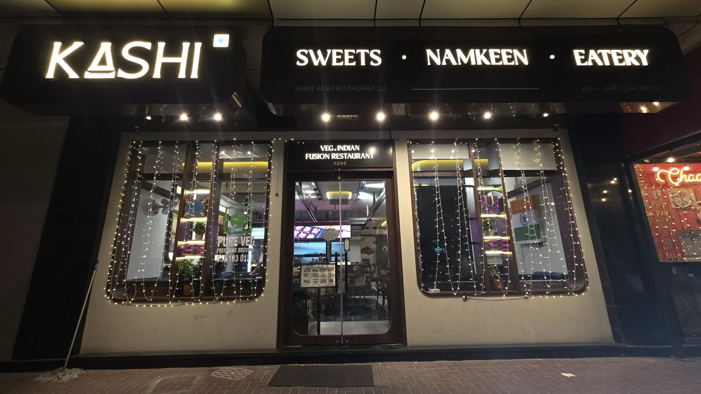
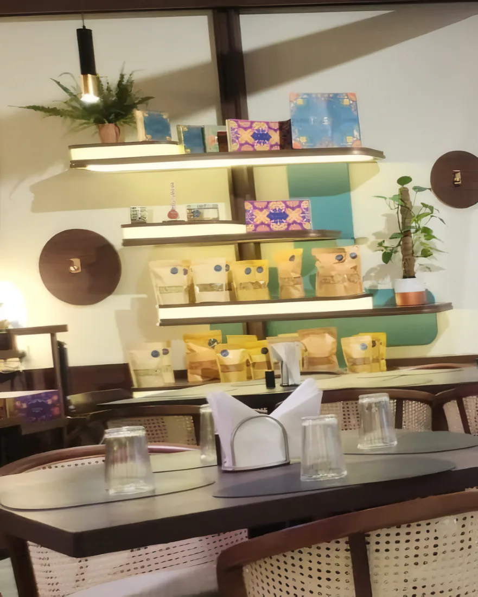

Our star dish · Indian Mains
Our star dish · Indian Mains
Desi Paneer Gotalo with Patti Pav
Crumbled paneer cooked in mixed gravy with house special masalas, served with soft patti pav. Spicy, desi, iconic.
AED48
Kashi is a pure veg Indian sweets, namkeen and fusion eatery in Al Karama. Chaat, pav bhaji, tandoor breads, curries and world favourites with a Kashi twist, made with zero preservatives.
Open every day from 11am

Shamma Building 7, 17A Street

At Kashi, we've wrapped all those delicious memories into a sweet and snack eatery that feels just like home, only with better lighting and no one yelling, "Bas ek hi le lo!"
From classic favourites to fusion sweets with a twist, our menu is a joyful celebration of India's flavours, reimagined for today.
Read our story
The first word on our sign. Sweets and namkeen sit on the shelves and the back counter, packed to take home or to send as a gift.
The one we grew up chasing the last piece of.
In glass jars on the back counter, and in Kashi packs to take home.
A thoughtfully packed hamper, to surprise someone.
Ask our staff, or have the Brownie with Ice Cream (AED 24).



Mumbai Vada PavFusion Pani PuriPav BhajiHariyali Garlic NaanBurrata BalchãoRaj KachoriIndian Masala ChaiDal MakhniChole BhatureThe dishes marked on our menu. Prices in AED, 5% VAT included.
Our star dish · Indian Mains
Crumbled paneer cooked in mixed gravy with house special masalas, served with soft patti pav. Spicy, desi, iconic.
AED48
Crisp puris filled with a creamy-spicy potato mix, served with three flavours of chilled water: basil mint, mango and berry. (8 puris)
Almond-coated aloo tikkis on a bed of tangy berry yoghurt and spicy ragda, topped with chutneys, sour cream and masala boondi.
Nachos get a chaat-style upgrade: creamy aloo corn masala, yogurt, 3 types of sweet and spicy chutneys, avocado pieces and in-house berry sauce.
Coconut milk-based Burmese noodle soup with veggies like water chestnut, broccoli and zucchini, served with an array of condiments.
Fusion curry combining Goan-style balchão spice with Indian makhni, cooked with Goan cashews and topped with burrata. Tangy and spicy.
Kashi's special: naan dough mixed with green vegetable purée, topped with garlic.
Fresh noodles tossed in housemade tangy and spicy chilli garlic paste with umami depth, paired with Asian veggies.
A melted three-cheese pot with dippers: french fries, sautéed veggies, garlic croutons and veg cheese balls.
A layered drink of orange juice and grenadine, made to look like a sunset. Sweet, citrusy, and camera-ready.
Thirteen sections, from AED 8 masala chai to Burrata Balchão. Tap one to open it.
At Kashi, every bite is a story, and we're here to make sure yours is a delightful one. A few gentle notes from the last page of our menu:
Wherever possible, we're delighted to prepare your food without onion, garlic, and even without potatoes, if you prefer a Jain preparation.
Our chefs pour their heart into every dish. Kindly allow us a minimum of 20 minutes to serve your order. Even khaas things need a little intezaar.
If you'd like your food served in a specific order, do let us know. We're happy to customise the sequence.
All prices are inclusive of applicable 5% UAE VAT.
Once placed, we request that orders are not cancelled. It helps us honour the effort our kitchen team puts into each preparation.
Because we'd love to be fully responsible for your experience at Kashi, from the first flavour to the last smile.
Open every day from 11am
Shamma Building 7, 17A Street, Al Karama, Dubai
Look for the lit-up KASHI sign: Sweets · Namkeen · Eatery.
| Monday | 11am – 11pm |
| Tuesday | 11am – 11:45pm |
| Wednesday | 11am – 11:45pm |
| Thursday | 11am – 11:45pm |
| Friday | 11am – 11:45pm |
| Saturday | 11am – 11:45pm |
| Sunday | 11am – 11:45pm |